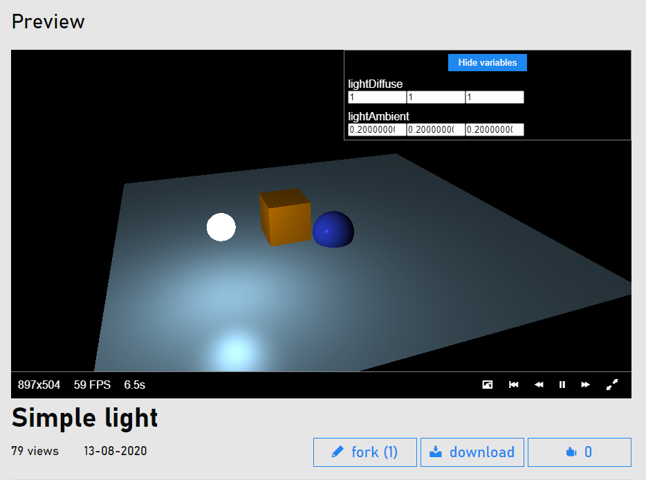

Website¶
SHADERed now also runs on the web. Create & explore HLSL, GLSL, GLSL ES & Godot canvas shaders in your browser. Utilize 3D geometry, render states, custom textures, etc…

Difference between quick fork & fork¶
There are two ways to fork a project hosted on the web - quick fork & fork. Quick fork lets you make only small modifications to the project. You can’t add new variables, geometry items, textures, new shader passes, modify item properties, etc… When you press the “fork” button though, a web version of SHADERed will open the project and you’ll be able to make heavy modifications.
Pinned variables¶
The variables that you pin in SHADERed’s web editor will appear in the list of variables when “quick editing” a shader.
Following & notifications¶
The people you follow will appear in your feed when they post a new shader. You can mention someone in the comments by typing “@USERNAME”. They will receive a notification.